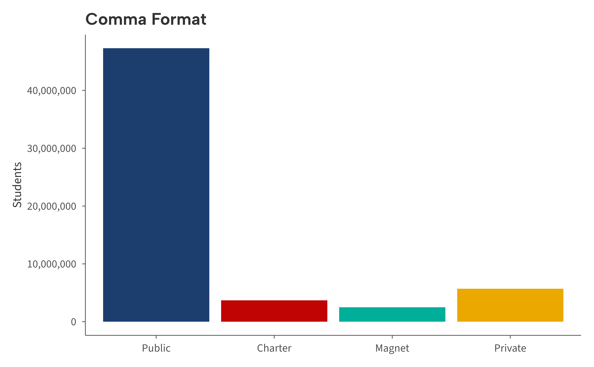
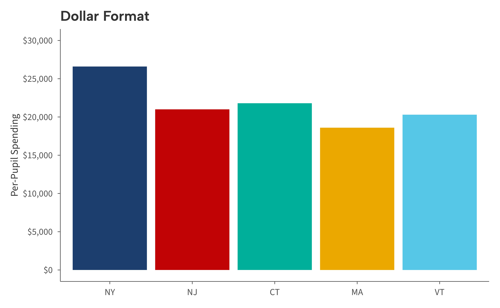
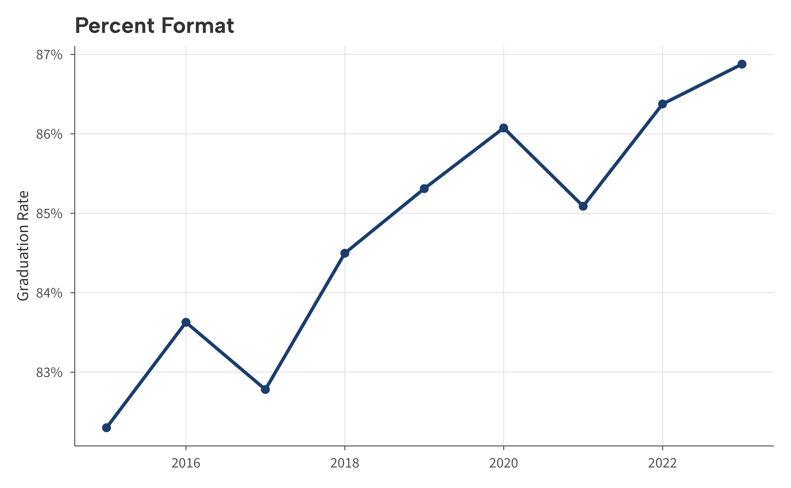
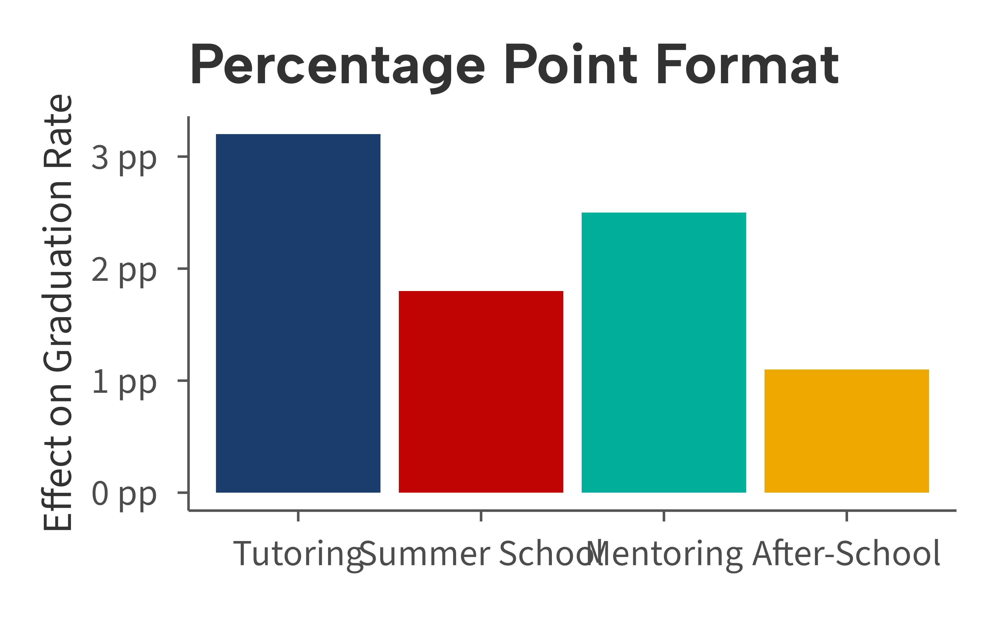

library(ggaib)
#> Brand fonts not found. Using bundled alternatives (Albert Sans, Source Sans 3, Crimson Text).
library(ggplot2)aib_label() is a convenience wrapper around common scales label functions. It returns a
labeler function that can be passed directly to the labels
argument of any continuous scale.
Available formats
| Type | Output | Underlying function |
|---|---|---|
"comma" |
1,000 | scales::label_comma() |
"dollar" |
$1,000 | scales::label_dollar() |
"percent" |
100% | scales::label_percent() |
"pp" |
1 pp | scales::label_comma(suffix = " pp") |
Examples
Comma
enrollment <- data.frame(
sector = c("Public", "Charter", "Magnet", "Private"),
students = c(47.3, 3.7, 2.5, 5.7) * 1e6
)
enrollment$sector <- factor(enrollment$sector, levels = enrollment$sector)
ggplot(enrollment, aes(sector, students, fill = sector)) +
geom_col() +
scale_fill_aib() +
scale_y_continuous(labels = aib_label("comma")) +
labs(title = "Comma Format", x = NULL, y = "Students") +
theme_aib() +
theme(legend.position = "none")
Dollar
spending <- data.frame(
state = c("NY", "NJ", "CT", "MA", "VT"),
ppexp = c(26.6, 21.0, 21.8, 18.6, 20.3) * 1000
)
spending$state <- factor(spending$state, levels = spending$state)
ggplot(spending, aes(state, ppexp, fill = state)) +
geom_col() +
scale_fill_aib() +
scale_y_continuous(labels = aib_label("dollar")) +
labs(title = "Dollar Format", x = NULL, y = "Per-Pupil Spending") +
theme_aib() +
theme(legend.position = "none")
Percent
grad <- data.frame(
year = 2015:2023,
rate = seq(0.83, 0.87, length.out = 9) + rnorm(9, 0, 0.005)
)
ggplot(grad, aes(year, rate)) +
geom_line(linewidth = 1, color = aib_colors("navy")) +
geom_point(size = 2, color = aib_colors("navy")) +
scale_y_continuous(labels = aib_label("percent")) +
labs(title = "Percent Format", x = NULL, y = "Graduation Rate") +
theme_aib_grid()
Percentage points
set.seed(42)
effects <- data.frame(
program = c("Tutoring", "Summer School", "Mentoring", "After-School"),
effect = c(3.2, 1.8, 2.5, 1.1)
)
effects$program <- factor(effects$program, levels = effects$program)
ggplot(effects, aes(program, effect, fill = program)) +
geom_col() +
scale_fill_aib() +
scale_y_continuous(labels = aib_label("pp")) +
labs(
title = "Percentage Point Format",
x = NULL,
y = "Effect on Graduation Rate"
) +
theme_aib() +
theme(legend.position = "none")
Usage
Pass aib_label() to the labels argument of
any continuous scale:
scale_x_continuous(labels = aib_label("dollar"))
scale_y_continuous(labels = aib_label("percent"))For formats not covered by aib_label(), use the scales package directly.